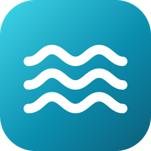

Marea
Sin conexión
No hay internet en este equipo o el servidor no responde. Marea vuelve a intentarlo sola cada 5 segundos y abre el panel apenas se pueda.

No hay internet en este equipo o el servidor no responde. Marea vuelve a intentarlo sola cada 5 segundos y abre el panel apenas se pueda.